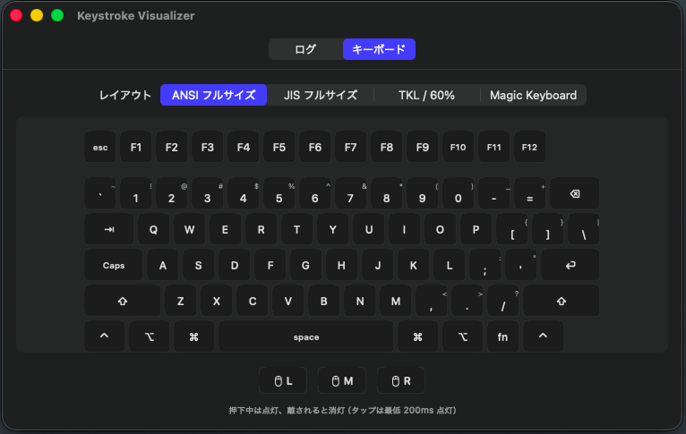
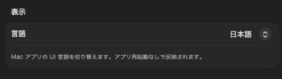
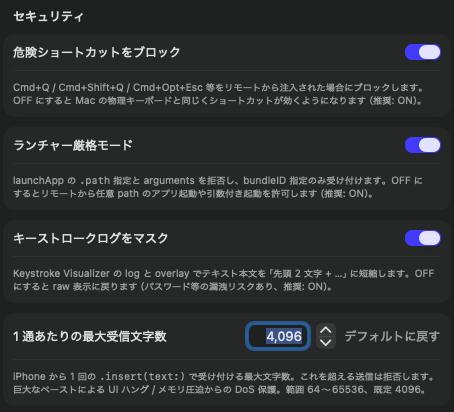
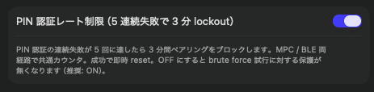
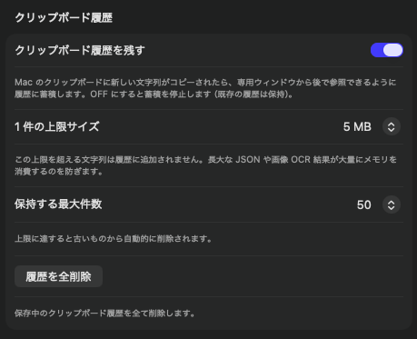
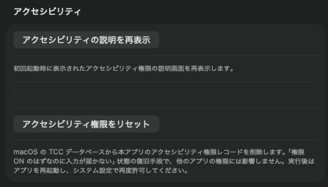
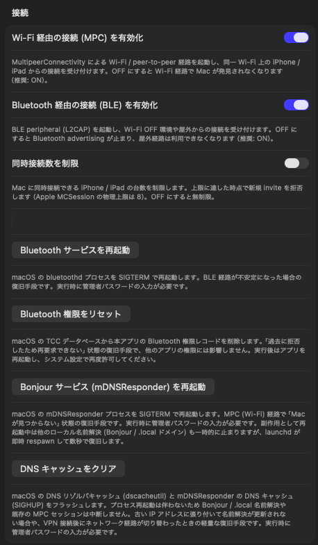
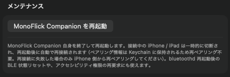

メニューバーに常駐する小さなアプリですが、機能は思っているより豊富です。
キー入力の可視化、クリップボード履歴、安全な接続、細やかな環境設定までを 1 ページで俯瞰できます。
MonoFlick Companion は、iPhone で打った文字や操作を Mac で「実際のキー入力／マウス操作」として再現する常駐アプリです。 Dock には表示されず、メニューバー右上のアイコンから常にアクセスできます。
LSUIElement、Dock 非表示）iPhone から送られてきたキー、Mac の物理キーボード入力を 2 つのモードで確認できます。

Mac の「コピー」と、iPhone から送られた「クリップボード書き込み」を 1 か所に集約します。
Mac で開いているアプリ一覧を iPhone 側のランチャーに反映します。 アプリの起動／終了を Mac で検知すると、自動的に iPhone へ通知します。
初回接続時は Mac 側に表示された 6 桁の PIN を iPhone に入力するだけで完了します。
システム言語に追従する 「システム」 がデフォルト。手動で日本語 / 英語を選ぶこともでき、切替は即時反映されます（一部のウィンドウタイトルは英語固定）。

| 項目 | 既定 | 挙動 |
|---|---|---|
| 危険ショートカットをブロック | ON | ⌘Q / ⌘⇧Q / ⌃⌘Q / ⌘⌥Esc をリモートから無効化 |
| ランチャー厳格モード | ON | 任意パスのバイナリ起動・引数渡しを禁止 |
| キーストロークログをマスク | ON | ログ表示時にテキストを先頭 2 文字 + 省略表示 |
| insert 受信長の上限 | 4096 文字 | 1 度に流せる文字列の長さ上限（DoS 対策） |
| PIN 認証レート制限 | ON | 5 連続失敗で 3 分間ロックアウト |
| 同時接続上限 | OFF（既定無制限） | ON にすると 1〜8 台で制限。例: 2 台に絞ると「家族用 + 自分用」だけに固定 |



初回起動時のアクセシビリティ案内をもう一度見たい場合に押す再表示ボタンを用意しています。あわせて、復旧手順として TCC データベースから本アプリのレコードのみを消す「アクセシビリティ権限をリセット」ボタンも用意しています。

MPC（Wi-Fi）と BLE の有効化、同時接続数の制限、そして接続が不安定になったときの復旧手順を 1 か所にまとめています。

MonoFlick Companion を再起動ボタンで、アプリ自身を終了して再起動します。接続中の iPhone / iPad は一時的に切断され、再起動後に自動で再接続されます（ペアリング情報は Keychain に保存されるため再ペアリング不要）。bluetoothd 再起動後の BLE 状態リセットや、アクセシビリティ権限の再要求にも使えます。

Mac がスリープしたとき、コンパニオンは自動的に MPC / BLE の advertise を停止し、 起床時に 1 秒の待機を挟んで再開します。 iPhone 側の操作は不要で、ペアリング済みの状態は維持されます。
iPhone で「Mac のクリップボードに送る」操作を行うと、
Mac の NSPasteboard に書き込まれ、同時に履歴にも source=iPhone として記録されます。
| 権限 | 用途 | 取得方法 |
|---|---|---|
| ローカルネットワーク | iPhone との MPC 通信 | 初回 OS プロンプトで「許可」 |
| Bluetooth | BLE での通信（屋外・Wi-Fi OFF 経路） | 初回 OS プロンプトで「許可」 |
| アクセシビリティ | キー入力・マウス操作の合成（CGEvent） | システム設定 → プライバシーとセキュリティ → アクセシビリティ で手動 ON |